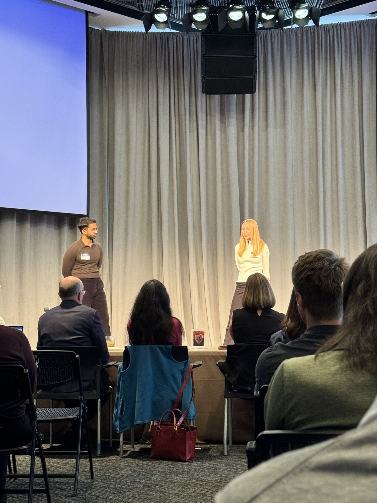
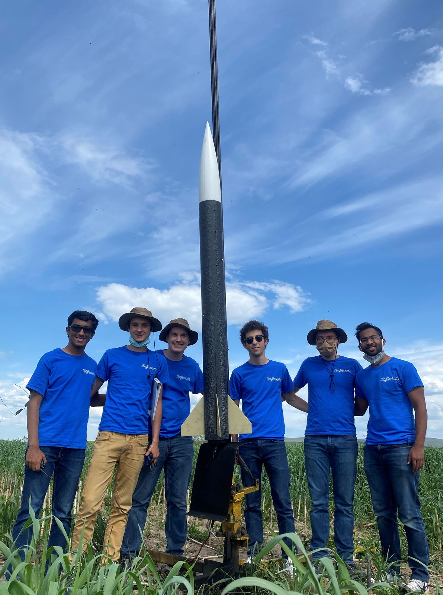
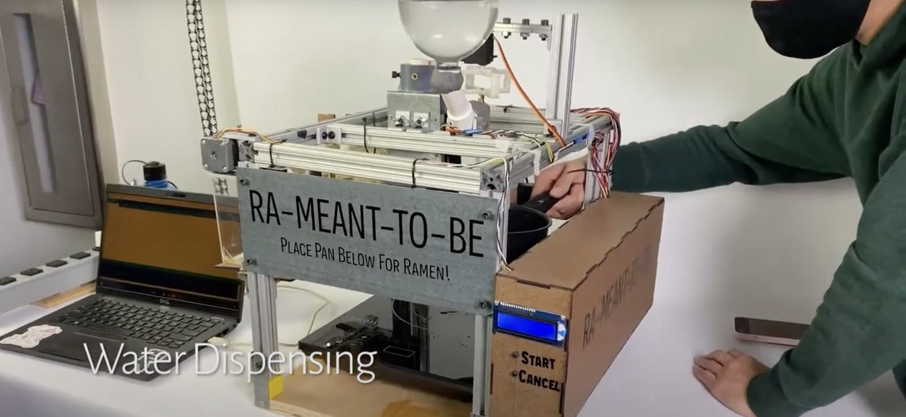

About Me
Things I am working on
- Architecture @ Lunar Energy
Things I have worked on
- Co-Founder @ Datum Agriculture
- Data Analyst @ World Research Institute (Energy Access)
- Engineer @ SuperSense (ONE Instant FILM)
- Platoon Sergeant @ Singapore Army
Current explorations
- Grid Resilience
- Energy Access
- 4 x 5 Photography
Projects I Am Proud Of
- Built a home-battery system using recycled 18650 Batteries
- Determined high-potential areas for energy infrastructure in Zambia
- Revived a lost film format (Polaroid Peel Apart Film - FP100C)
- Designed platform for and with mental-health helpers
- Created a "Magic Mirror" for home
- Built an autonomous ramen maker with 4 friends
- Part of a team that launched a rocket to 10,000 ft
- Led a platoon of 113 troopers in the Singapore Army
- Finalist of MIT Ag Prize
- Winner OpenAI Climate Hackathon
- Collecting check from first customer



